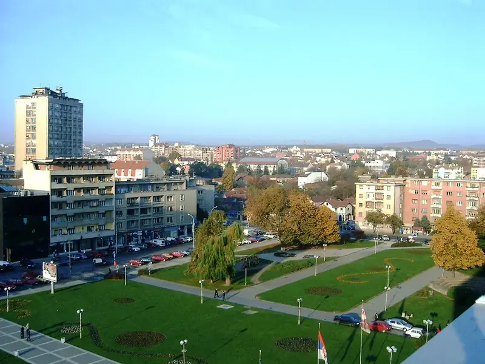

Gde vam je potreban zubar?
Ovde su adrese i telefoni stomatoloških ordinacija iz cele Srbije. Izaberite grad, pogledajte ko je blizu i pozovite.
Do sada smo upisali 2.560 ordinacija u 127 gradova.
Počnite od svog grada
Najviše ordinacija ima u ovim gradovima. Ostale ćete naći na spisku ispod.
 Beograd1.409 ordinacija
Novi Sad143 ordinacije
Niš54 ordinacije
Beograd1.409 ordinacija
Novi Sad143 ordinacije
Niš54 ordinacije

Kragujevac52 ordinacije Pančevo48 ordinacija Kraljevo42 ordinacije
Kraljevo42 ordinacije
 Subotica42 ordinacije
Subotica42 ordinacije
 Zrenjanin41 ordinacija
Zrenjanin41 ordinacija
- Ada (6)
- Aleksandrovac (7)
- Aleksinac (3)
- Alibunar (2)
- Apatin (4)
- Aranđelovac (7)
- Arilje (4)
- Babušnica (2)
- Bač (2)
- Bačka Palanka (6)
- Bačka Topola (3)
- Bački Petrovac (3)
- Bajina Bašta (4)
- Banatski Karlovac (1)
- Banatsko Karađorđevo (1)
- Batočina (2)
- Bečej (7)
- Bela Crkva (3)
- Bela Palanka (2)
- Beočin (2)
- Beograd (1.409)
- Blace (2)
- Bogatić (4)
- Bojnik (1)
- Bor (8)
- Brus (1)
- Bujanovac (11)
- Čačak (21)
- Čajetina (2)
- Ćićevac (3)
- Ćuprija (11)
- Despotovac (7)
- Doljevac (1)
- Donji Milanovac (1)
- Futog (4)
- Golubac (1)
- Gornji Milanovac (7)
- Grdelica (3)
- Inđija (8)
- Ivanjica (7)
- Jagodina (24)
- Kanjiža (5)
- Kikinda (13)
- Kladovo (10)
- Knjaževac (5)
- Koceljeva (1)
- Kosjerić (3)
- Kostolac (1)
- Kovačica (3)
- Kovin (5)
- Kragujevac (52)
- Kraljevo (42)
- Krupanj (2)
- Kruševac (40)
- Kula (6)
- Kuršumlija (2)
- Lajkovac (1)
- Lapovo (1)
- Lebane (2)
- Leskovac (18)
- Ljubovija (1)
- Loznica (33)
- Lučani (2)
- Male Pijace (1)
- Mali Iđoš (1)
- Mol (1)
- Negotin (16)
- Niš (54)
- Nova Crnja (1)
- Nova Pazova (4)
- Nova Varoš (1)
- Novi Banovci (1)
- Novi Bečej (3)
- Novi Kneževac (1)
- Novi Pazar (11)
- Novi Sad (143)
- Odžaci (5)
- Opovo (1)
- Pančevo (48)
- Paraćin (12)
- Petrovac (2)
- Pirot (9)
- Plandište (1)
- Porodin (1)
- Požarevac (13)
- Požega (4)
- Priboj (4)
- Prijepolje (5)
- Prnjavor (2)
- Prokuplje (11)
- Raška (1)
- Ruma (3)
- Ruski Krstur (1)
- Sečanj (1)
- Senta (7)
- Sevojno (1)
- Smederevo (17)
- Smederevska Palanka (6)
- Sokobanja (2)
- Sombor (20)
- Sremska Kamenica (3)
- Sremska Mitrovica (20)
- Sremski Karlovci (2)
- Stara Pazova (2)
- Subotica (42)
- Šabac (37)
- Šid (4)
- Temerin (7)
- Topola (3)
- Trstenik (4)
- Ub (3)
- Užice (13)
- Valjevo (27)
- Varvarin (2)
- Velika Plana (4)
- Veliko Gradište (4)
- Vladičin Han (2)
- Vlasotince (3)
- Vranje (13)
- Vrbas (12)
- Vrnjačka Banja (3)
- Vršac (22)
- Zaječar (13)
- Zrenjanin (41)
- Zubin Potok (1)
- Žabalj (1)
- Žiča (1)
Ordinacije sa potvrđenim profilom
U većim gradovima, ordinacije koje su same dopunile svoje podatke.
Šta vam je potrebno?
Izaberite oblast i pročitajte šta obuhvata.
Kako ovo funkcioniše
Izaberete grad ili ukucate ime ordinacije. Pogledate adresu i telefon, a gde je ordinacija sama dopunila profil, i radno vreme, usluge i slike. Onda pozovete i dogovorite termin. Termine ne zakazujemo mi, a ni preko sajta.
Korisno pročitati
Kratki članci o zdravlju zuba i izboru ordinacije.
Koliko često treba ići kod stomatologa
Koliko često ići na kontrolu, šta se radi na pregledu i kada ne treba čekati zakazani termin.
Pročitaj članak →Kako izabrati stomatološku ordinaciju
Na šta da obratite pažnju pri izboru ordinacije: lokacija, usluge, radno vreme, komunikacija i okvirna cena unapred.
Pročitaj članak →Šta očekivati na prvom pregledu kod stomatologa
Kako izgleda prvi pregled: razgovor, pregled usta, eventualni snimak i plan lečenja. Kako da se pripremite i šta da pitate.
Pročitaj članak →Zubobolja: kada ne treba čekati
Znakovi koji znače da se odmah javite stomatologu ili hitnoj službi, i šta ne treba raditi dok ne dođete do pregleda.
Pročitaj članak →Često postavljena pitanja
Odgovori za pacijente i za ordinacije.
Za pacijente
Da li je korišćenje sajta besplatno?
Da. Pretraga ordinacija, pregled adresa i telefona i čitanje članaka su besplatni i ne zahtevaju nalog.
Mogu li da zakažem termin preko sajta?
Ne. Termine ne zakazujemo mi, a ni preko sajta. Pozovite ordinaciju na broj koji je naveden i dogovorite termin direktno.
Odakle potiču podaci o ordinacijama?
Podaci potiču iz javno dostupnih izvora i mogu biti zastareli. Ako primetite grešku, prijavite je preko forme za kontakt, a ordinacije mogu same da ispravljaju svoje podatke.
Šta znači „Potvrđen profil“?
To je ordinacija čiji je vlasnik ili ovlašćeno lice potvrdio profil: mi smo ga prethodno proverili pozivom na broj iz imenika. Takve ordinacije mogu da dopune radno vreme, usluge, opis, fotografije i tim.
Zašto neka ordinacija nema tačnu lokaciju na mapi?
Tačnu lokaciju imamo za većinu ordinacija, ali ne za sve. Ako lokacija nije utvrđena, ordinaciju nećete videti na mapi, ali su adresa i telefon i dalje prikazani.
Kako da prijavim netačan podatak ili zatražim uklanjanje profila?
Otvorite stranicu ordinacije i kliknite „Prijavi netačan podatak“, ili nam pišite preko forme za kontakt i izaberite odgovarajuću temu.
Za ordinacije
Kako da potvrdim i uredim profil svoje ordinacije?
Pronađite ordinaciju u pretrazi, otvorite njenu stranicu i kliknite „Ovo je moja ordinacija“. Prijavite se linkom koji stiže na vašu e-adresu i pošaljite zahtev. Zatim ćemo vas pozvati na broj iz imenika, a kod za proveru nalazi se u odeljku „Moj nalog“.
Šta mogu sam da menjam na profilu?
Odmah objavljujete telefone, radno vreme, usluge, kratak opis, sajt i društvene mreže. Naziv, adresa, fotografije i tim objavljuju se tek posle naše provere.
Koliko košta potvrđen profil?
Ordinacije koje potvrde profil imaju prvih 6 meseci besplatno od dana potvrde profila. Posle toga 500 RSD mesečno ili 5.000 RSD godišnje.
Šta ako moje ordinacije nema u imeniku?
Pošaljite nam podatke preko forme „Nema vaše ordinacije? Dodajte je“. Proveravamo pozivom na broj telefona ordinacije.
Zašto proveravate pozivom?
Da bismo se uverili da profil potvrđuje vlasnik ili ovlašćeno lice. Zato zovemo na broj koji je već u imeniku.
Kako da uklonim profil ordinacije?
Pošaljite zahtev preko forme za kontakt i izaberite temu „Uklanjanje profila“.
Radite u ordinaciji?
Vaša ordinacija je verovatno već upisana, ali podaci mogu biti stari ili nepotpuni. Potvrdite i uredite profil, pa ih ispravite sami: telefon, radno vreme, usluge, opis i fotografije.
Ordinacije koje potvrde profil imaju prvih 6 meseci besplatno od dana potvrde profila. Posle toga 500 RSD mesečno ili 5.000 RSD godišnje.
- Ispravite podatke
- Dodajte radno vreme, usluge i slike
- Budite vidljivi pacijentima u svom gradu
O podacima. Podaci o ordinacijama potiču iz javno dostupnih izvora i mogu biti zastareli. Ako primetite grešku, prijavite je.